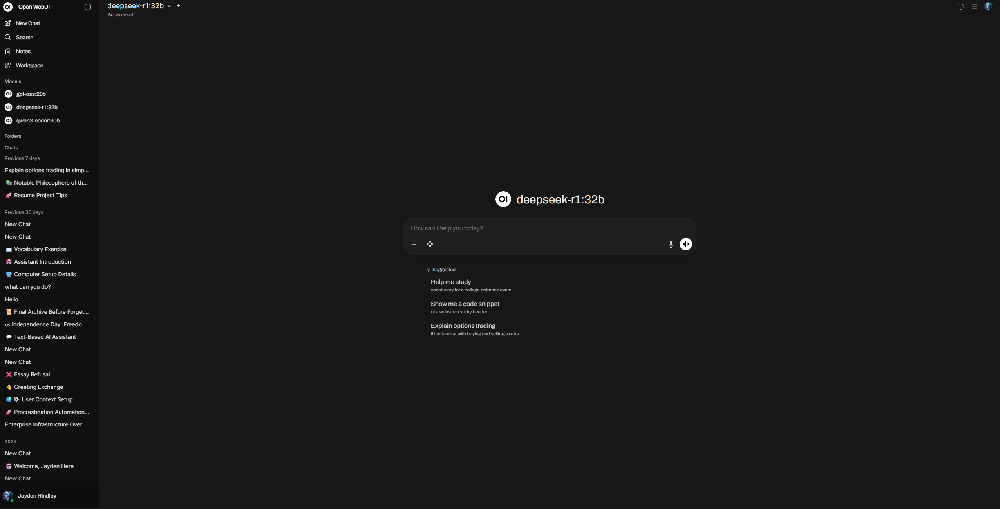
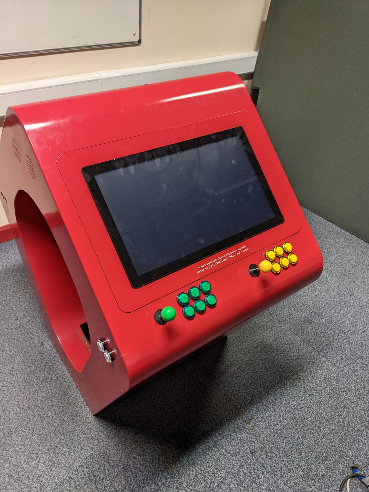
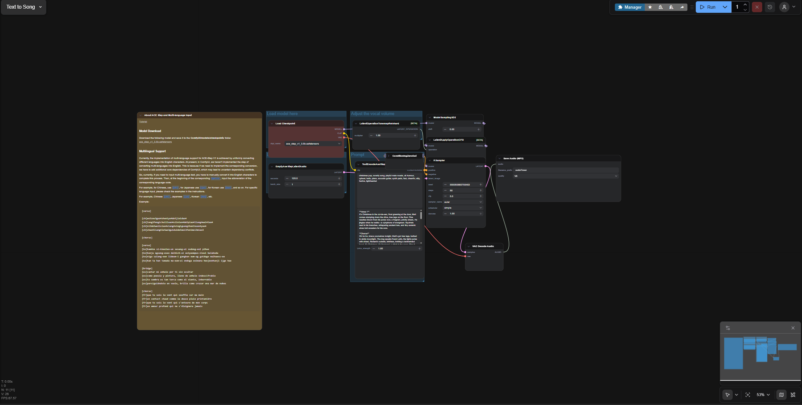
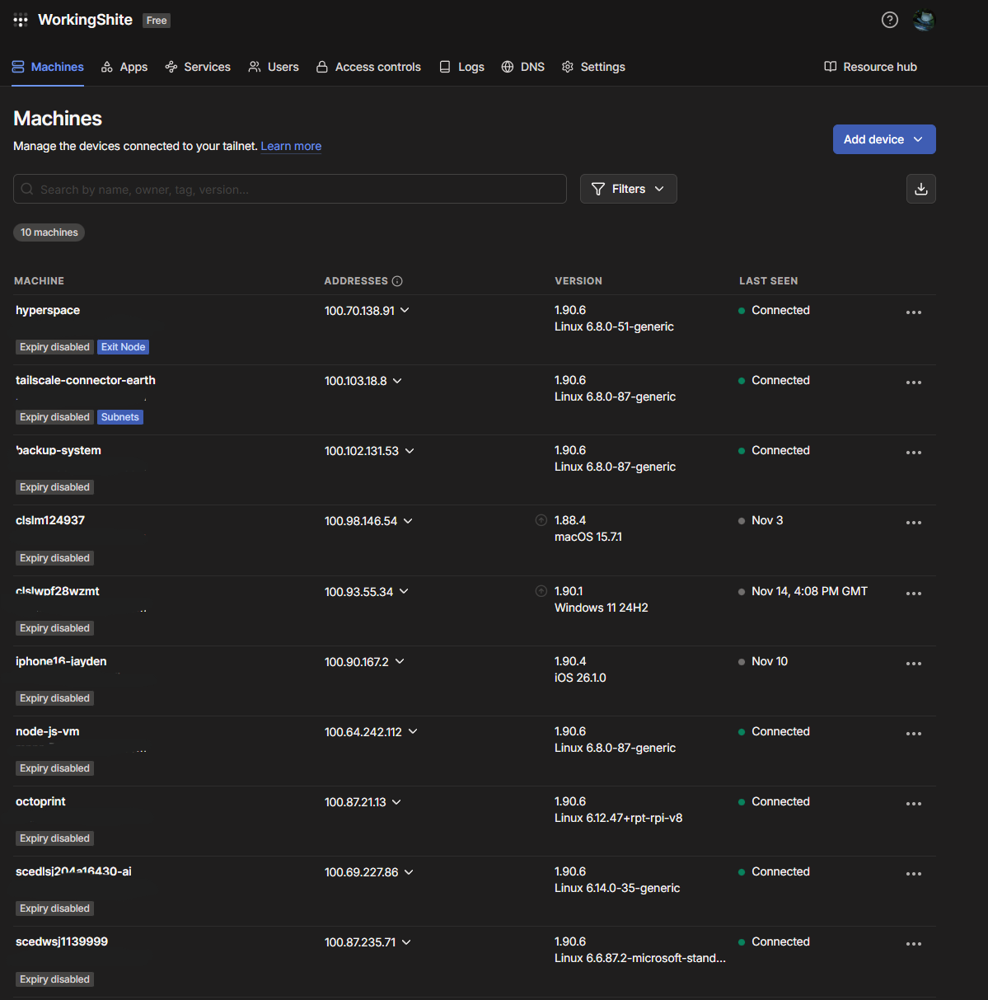
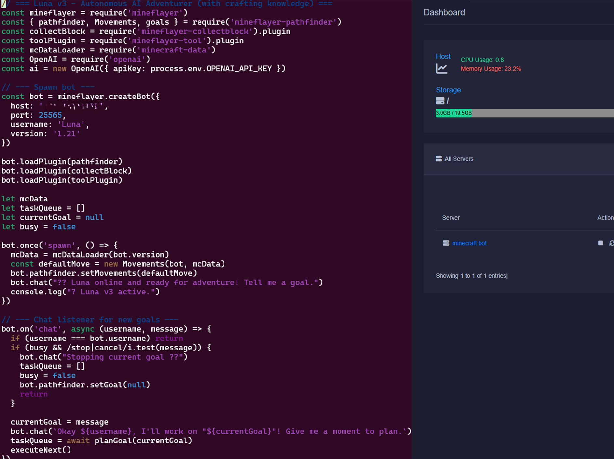
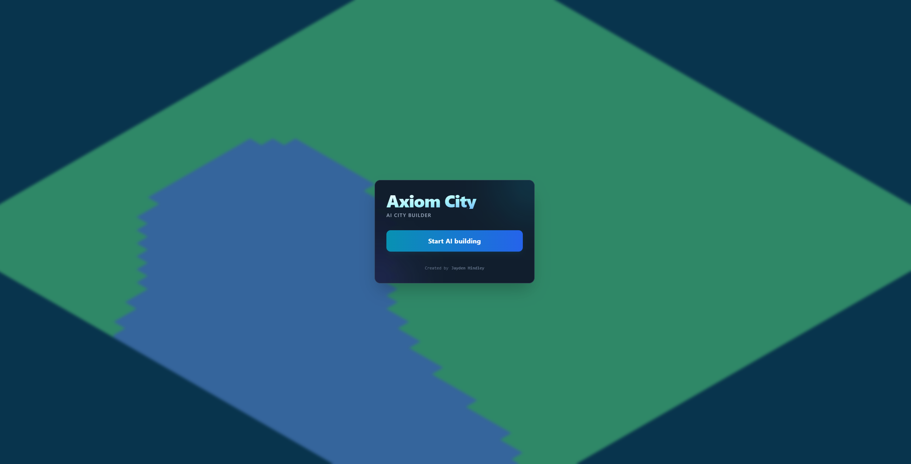
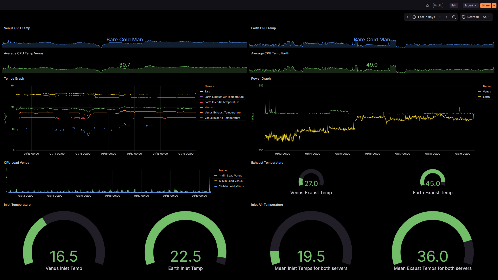
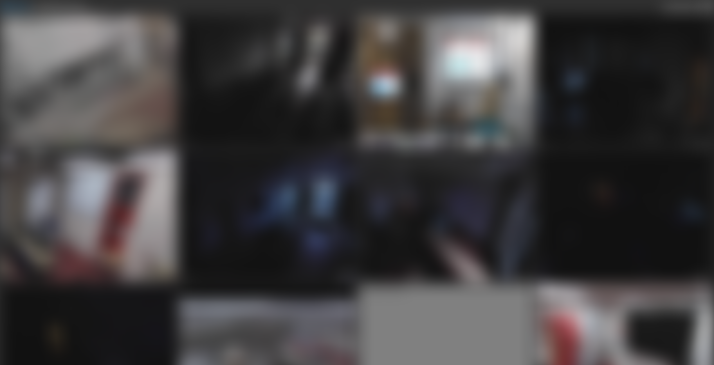

HPC Monitoring Dashboard
Lightweight Flask app that pings lab machines, parses login logs, and exposes real-time status and uptime data via a clean web UI.
A mix of infrastructure, automation, and “I wonder if I can make this do that?” experiments.
Lightweight Flask app that pings lab machines, parses login logs, and exposes real-time status and uptime data via a clean web UI.

Bash + rsync + pigz scripts with rotation, Telegram notifications, and separate local/remote tiers for resilient backups.

Control Dell servers from Telegram with safe power actions, graphs, and status history using Redfish APIs for out-of-band management.

Automated STL to GCODE flow with watchers, slicers, OctoPrint upload, and chat notifications for print status.

GPU-accelerated LocalAI deployments with Docker, P2P features, and custom endpoints wired into existing tools and bots.

Proxmox VE virtualisation with GPU passthrough, high-availability VMs, and automated backups, tightly integrated with existing systems and workflows.

Arcade is a retro gaming machine that lets you play classic arcade games from the 80s and 90s. It's built on a Raspberry Pi 4 and runs RetroPie, a free and open-source software that lets you play games from a variety of systems.

Comfy WebUI is a browser-based interface for ComfyUI that lets you design and run Stable Diffusion workflows using visual node graphs. It gives you fine-grained control over models, prompts, and generation steps, making complex image pipelines clear, flexible, and easy to experiment with.

n8n automation workflows with custom triggers, API integrations, and event-driven logic, seamlessly connected to existing systems, bots, and infrastructure.

My website is a personal hub where I showcase my projects, skills, and experiments. It acts as a living portfolio and playground, pulling together my work, ideas, and ways to get in touch in one place.

Tailscale VPN mesh networking with secure device routing, subnet sharing, and lightweight access controls, seamlessly linking servers, services, and remote environments.

NodeJS-powered Minecraft automation with autonomous behaviour, real-time event handling, and custom plugins, fully integrated with external APIs, tools, and control systems.

An AI-powered city-building game where players can design, manage, and expand their own virtual metropolis with the help of intelligent agents that adapt to player strategies and environmental changes.

Graphina is a modern dashboard framework for Grafana that makes building clean, interactive graphs fast and simple. It focuses on clear visuals, flexible layouts, and real-time data, turning raw metrics into dashboards that are easy to read and actually useful.

MotionEye is a free open-source software for video surveillance. It allows you to monitor multiple cameras, record video, and receive notifications when motion is detected. It is a lightweight and flexible solution that can be used for both home and business security.